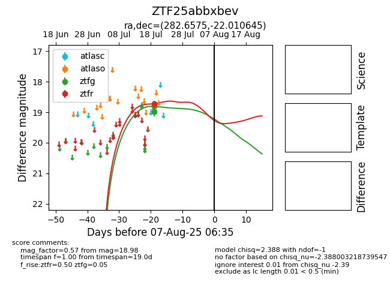

Target ZTF25abbxbev at 2025-08-07 07:30, see:
FINK: fink-portal.org/ZTF25abbxbev
Lasair: lasair-ztf.lsst.ac.uk/objects/ZTF25abbxbev
ALeRCE: alerce.online/object/ZTF25abbxbev
alt names
ZTF25abbxbev (ztf,fink)
coordinates:
equatorial (ra, dec) = (282.6575,-22.01065)
galactic (l, b) = (13.0630,-9.67063)
photometry
last ztfg=18.98, ztfr=18.72
3 ztfg, 1 ztfr detections
